SCAM User's Guide
J. J. Hack, J. E. Truesdale, J. A. Pedretti and J. C. Petch
Contents
Numerical modeling of the climate system and its sensitivity to anthropogenic forcing is a highly complex scientific problem. Progress toward accurately representing our climate system using global numerical models is primarily paced by uncertainties in the representation of non resolvable physical processes, most often treated by what is known as physical parameterization. A principal example of the parameterization problem is how to accurately include the overall effects of moist processes, i.e., the various components of the hydrologic cycle, into the governing meteorological equations. Since water in any phase is a strongly radiatively active atmospheric constituent, and since changes in water phase are a major source of diabatic heating in the atmosphere, the large-scale moisture field plays a fundamental role in the maintenance of the general circulation and climate. Clouds themselves are a central component in the physics of the hydrologic cycle since they directly couple dynamical and hydrological processes in the atmosphere through the release of the latent heat of condensation and evaporation, through precipitation, and through the vertical redistribution of sensible heat, moisture and momentum. They play a comparable role in the large-scale thermodynamic budget through the reflection, absorption, and emission of radiation and also play an important role in the chemistry of the Earth's atmosphere. Evaluating the many parametric approaches which attempt to represent these types of processes in atmospheric models can be both scientifically complex and computationally expensive.
An alternative approach to testing climate model parameterizations in global atmospheric models is in what are called single column models or SCMs. As the name suggests, an SCM is analogous to a grid column of a more complete global climate model, where the performance of the parameterized physics for the column is evaluated in isolation from the rest of the large-scale model. Various forms of "observations" can be used to specify the effects of neighboring columns, as well as selected effects of parameterized processes (other than those being tested) within the column, such as surface energy exchanges. The SCM approach lacks the more complete feedback mechanisms available to an atmospheric column imbedded in a global model, and therefore cannot provide a sufficiently thorough framework for evaluating competing parametric techniques. It can, however, provide an inexpensive first look at the characteristics of a particular parameterization approach without having to sort out all the complex nonlinear feedback processes that would occur in a global model.
Because of the large computational expense associated with evaluating new parameterizations using a complete atmospheric general circulation model, we have developed a highly flexible and computationally inexpensive single column modeling environment for the investigation of parameterized physics targeted for global climate models. In particular, this framework is designed to facilitate the development and evaluation of physical parameterizations for the NCAR Community Atmosphere Model (CAM). The SCM modeling environment provides a framework for making initial assessments of physical parameterization packages and allows for the incorporation of both in situ forcing datasets [e.g., Atmospheric Radiation Measurement (ARM) data] and synthetic, user specified, forcing datasets, to help guide the refinement of parameterizations under development. Diagnostic data which can be used to evaluate model performance can also be trivially incorporated. The computational design of the SCM framework allows assessments of both the scientific and computational aspects of the physics parameterizations for the NCAR CAM because the coding structures at the physics module levels are identical. We believe that this framework will have widespread utility and will help to enrich the pool of researchers working on the problem of physical parameterization since few have access to or can afford to test new approaches in atmospheric GCMs. Another strength of our approach is that it will provide a common framework in which to investigate the scientific requirements for the successful parameterization of subgrid-scale processes.
1.1 Basic description of the NCAR CAM SCAM Framework
The NCAR single column CAM (SCAM) is a one-dimensional
time dependent
model in which the local time-rate-of-change of the large-scale state
variables
(e.g., temperature, moisture, momentum, cloud water, etc.) depends on
specified
horizontal flux divergences, a specified vertical motion field (from
which
the large-scale vertical advection terms are evaluated), and
subgrid-scale
sources, sinks and eddy transports. The subgrid-scale contributions are
determined by the particular collection of physical parameterizations
being
investigated. Because an SCM lacks the horizontal feedbacks that occur
in complete three-dimensional models of the atmosphere, the governing
equations
are only coupled (incompletely) through the parameterized physics. In a
practical sense this means that the thermodynamic and momentum
components
of the governing equations are generally independent of one another,
where
typical configurations of SCAM would consider each of these budgets
independently. The thermodynamic configuration consists of
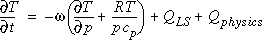
(1),
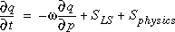
(2),
where the terms SLS and QLS schematically
denote
the large-scale horizontal flux divergence forcing terms. The terms Qphysics
and Sphysics schematically denote the collection of
parameterized
physics terms. Similarly, the momentum equations take the form
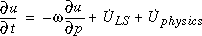
(3),
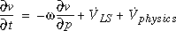
(4),
where the large-scale horizontal flux divergence and parameterized
physics
terms are denoted by 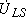, 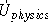, 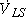,
and 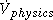.
The SCAM numerically integrates these equations starting from "user specified" initial conditions. We will discuss the initialization process shortly. The right-hand side of equations (1) - (4) are either evaluated numerically or arbitrarily specified. The terms 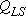, 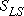, , and are specified quantities, as is the vertical motion profile, 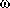, since they represent a degree of freedom which is not available to a single column modeling framework. The vertical advection terms (e.g., 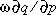) are explicitly evaluated by the SCM using either the CAM Eulerian advection formalism, the CAM semi-Lagrangian advection formalism, or some combination of the two. The default configuration is analogous to the CAM, where water vapor and other constituents are advected using the semi-Lagrangian procedure, while temperature and momentum are advected with the CAM Eulerian finite-differences. Alternatively, if the large-scale vertical advection terms are available in any of the SCAM forcing datasets, the user can modify the SCAM dynamical driver to use these terms in place of the default large-scale vertical advection calculation. Note, all large-scale terms on the right-hand side of eq. (1) - (4) are defined as a positive tendency in any of the datasets provided with the SCAM. For example, the large-scale vertical advection term 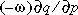 would be defined exactly as it appears on the right hand side of equation (2) in all datasets. This sign convection is consistent with the way in which the large-scale advection information is provided for ARM Intensive Observing Period observations used for single column modeling applications.
Finally, the remaining physical parameterization terms are explicitly evaluated using the standard CAM physics packages or an alternative physical parameterization package as configured by the user. The coding constructs (e.g., calling tree, parameter lists, etc.) are identical to what is contained in the CAM. The SCAM operates in one of two standard modes. The first mode allows the user to select an arbitrary atmospheric column from anywhere on the globe. The SCAM will build an initial condition for this column (along with all the necessary boundary datasets, such as surface properties, ozone path lengths, etc.) from one of two data sources. Presently these data sources are monthly average climatological properties from ECMWF analyses or from model generated (i.e., CAM) results. At this point in time, the horizontal flux divergence forcing tendencies are specified to be zero when using this configuration of the SCAM. There are some important modeling implications for the solutions when specifying a zero horizontal forcing. They will be discussed in future versions of this document, along with alternative ways of treating these terms. The second mode of operation makes use of what we refer to as Intensive Observing Period (IOP) data. This data provides transient forcing information to SCAM physics, where the source of such data will most frequently be from observational field programs such as GATE, ARM, and TOGA COARE. An alternative to field program data might be a synthetically generated dataset designed to stress certain aspects of a parameterization technique. We expect that such datasets would generally incomplete when it comes to providing all the data required to initialize and integrate the SCAM. Therefore, when using the IOP option, the SCAM first builds an initial condition using the appropriate climatological profiles and surface quantities using global analysis data, and incorporates the appropriate model specific boundary condition data for the column closest to where the IOP data is located. It then overwrites this data with whatever IOP data is available. In this way the model is guaranteed to have all the data necessary to perform a numerical integration. This procedure may introduce inconsistencies in the initial and boundary value states which could result in undesirable systematic errors in the solution. Once again, this puts the burden on the user to completely understand what has been assumed for the purpose of integrating the SCAM using IOP data. At the moment, the IOP datasets consist of the GATE dataset, a TOGA COARE dataset (ascii data for both were obtained from the CSU single column modeling web site: http://kiwi.atmos.colostate.edu/scm/scm.html), and an ARM dataset (for which the ascii data was obtained from the from the ARM intercomparison web site: http://wetfly.llnl.gov/scm/scm_intercomp/). Over time, we will assemble additional IOP forcing datasets from new field experiments, revisions of existing IOP datasets, and will explore the use of GCM and analysis generated forcing in regions where detailed observational data may not exist. See Table 1 for a summary of the format of the SCAM NetCDF datasets.
1.2 Potential for solution differences across physics program
libraries
There have been several releases of the single column model, some of
which have incorporated changes to the GUI only, and others that
have included GUI updates along with changes to the the latest physics
program library. Generally speaking, there are two types of
updates
made to the physics algorithms: minor changes causing round off
differences
and major parameterization updates. Experience has shown that
even
small round off changes can introduce nontrivial differences in the
solutions
produced by the single column model. For example, the old and new
solutions will track each other to a high degree of accuracy and
suddenly
diverge, resulting in fundamentally different solution
characteristics.
This is a property of branch points in the physics codes that can
result
in non deterministic solutions, and should not necessarily be cause for
alarm. Once a significant difference is introduced in a
solution
because of a branch point, the lack of dynamical feedbacks can limit
the
chances that the solutions will once again converge. Below are
plots
showing solution difference attributable to minor algorithmic changes
(compare
temperature errors for ccm3.2 and ccm3.6) and major changes to physical
parameterizations (compare temperature differences between ccm3.6 and
cam2.0)
The solutions represent the temperature error time series for the
CCM3.2,
CCM3.6, and CAM2 physics algorithms when forced with the ARM Summer
1995
IOP dataset.
Although it can be argued that CAM2 solution has the same large scale
structure and biases for the major convective events, it includes
fundamental
changes to the atmospheric physics and is expected to produce a
different
solution than either the ccm3.2 or ccm3.6 physics.
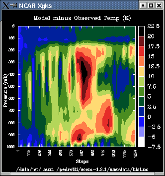TDIFF(CCM3.2) 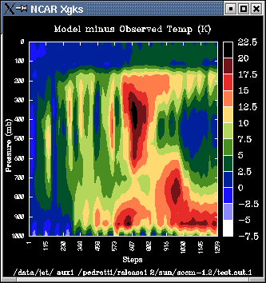TDIFF (CCM3.6)
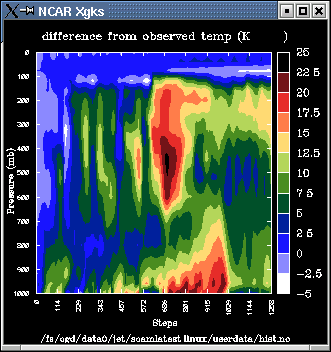TDIFF (CAM2)
SCAM is now a part of the CAM distribution. To run CAM in
single column mode requires a fortran compiler and all of the libraries
needed to compile CAM. Additionally you will also need the QT
library which is freely available for the Linux platform from http://www.trolltech.com.
Most distributions of Linux already have a minimal version of QT
installed but these installations normally lack the development header
files
and binaries to build a QT GUI. You can check if the QT 'moc' and
'uic' binaries are available by using your distribution's package
manager or by using the locate utility. (Ex. typing 'locate uic | grep
bin' will list all files containing the letters uic and residing in a
bin directory.) If you don't have QT installed or are lacking the
required QT binaries you can download and build the QT library from
trolltech. SCAM also requires the NCAR Graphics library to enable
plotting. You can download the NCAR Graphics library from http://ngwww.ucar.edu/ .
Building SCAM depends on the following utilities: Except for the
fortran compiler all of them should already exist on your platform.
Use
Netscape or your favorite web browser to download the CAM source
code and datasets. The following link will take you to a registration
page for obtaining the CAM source code. http://www.ccsm.ucar.edu/php/ccsmAgreement.php?indexId=4
Follow the links for downloading the source and datasets. The size of the complete distribution, including datasets, is approximately xx mb. Once you have downloaded the file to your local machine you will need to extract them. The file cam-<version>.tar.gz contains CAM/SCAM source code for compiling the model and SCAM GUI. This file is a compressed tar file which must be uncompressed and "untarred" as follows:
gunzip -c scam-<version>.<system>.tar.gz | tar xvf -
This will create the directory `cam-<version>' containing the CAM/SCAM source code and configuration files.
The datasets needed to run scam are in a separate tar file.
Once they are installed locally please set the environment variable
CSMDATA to point to the root directory of the installation. The
SCAM configure script will use this environment variable to create the
proper links to the SCAM datasets.
2.3 Explanation of the SCAM Sub directory Organization
After untarring the source distribution change directory to the SCAM
root directory located under
cam1/models/atm/cam/tools/scam. The SCAM root directory will
contain the files `configure', `INSTALL',
and `GNUmakefile' and the sub directories described below.
2.4 Building SCAM
Executable and GUI
The user must configure the Makefiles for the desired target
architecture.
Currently the only supported architecture is Intel PC/Linux.
Before trying to configure and build SCAM you should set the following environment variables
All of the site specific configuration is
done by executing gmake from the scam root directory (type
`./gmake'). You will be asked to supply values for a few
parameters
as described below. In most cases the configure scripts should be
able to identify the
proper packages, just type return to select the default value.
The
configure process will then test your system's FORTRAN and C compilers
to
make certain they work properly together.
During the configuration you will be queried about the following variables.
2.5 Recompiling the
SCAM
Executable
To recompile the model, after changing source just type `gmake'
If you wish to recompile the fortran source from scratch type `gmake
clean' and `gmake' in the root directory. `gmake
clean' will remove all scam object files. typing `gmake'
then starts a fresh compilation.
If you wish to recompile both the SCAM executable and SCAM GUI from
scratch type `gmake realclean' followed by `gmake'.
This will remove all intermediate files as well as allow the user to
reconfigure
the model.
Congratulations! If you have made it this far, you have successfully built SCAM. If you have installed the datasets as suggested, you're done. (If the datasets have been installed in a different location, you need to edit one more file, ".scam_defaults", to change the paths to the datasets; see Section 2.8, "Optional Configurations".) Just type `./scam' in the scam root directory and you should be off and running. See Section 3., "The User Interface", for detailed instructions on how to use the model.
2.7 Changing Between CAM versions
Although previous versions of SCAM allowed you to switch between current and previous version of the Community Climate Model physics, the current version only supports the CAM3.0 physics code.
The file ".scam_defaults" is used by SCAM at startup to set some application defaults, including where to look for the initialization datasets. If the initialization datasets have been installed in a location other than "../data/" relative to the SCAM root directory, you will need to edit the variables "globaldatadir", "boundarydatadir" and "iopdatadir" which define the directories containing the initialization datasets before you start SCAM for the first time. Another variable you may want to edit is "./userdatadir", which defines the directory which will be used when showing file open or save dialogs. The initial value for this is "userdata" which refers to the directory of the same name in the scam root directory.
Note that the ".scam_defaults" file is regenerated by SCAM
by
selecting "Save Defaults" from within the Options dialog ( see Section
3.4, "Setting Options" ), so other than this one-time modification,
you normally won't need to edit this file again since you can specify
all
of the values through SCAM (except for the two "datadir" variables).
Because of the complexity of SCAM it is possible for problems to occur at several junctures. Below is a collection of commonly encountered problems and suggested solutions.
Problems with configuration
Solution: Most likely, the problem is with the naming of the directories which contain the library and include file. The configure script is expecting the library to be in a sub directory called "lib" and the include file to be in a sub directory called "include." If your particular installation has a different directory structure, just make a directory called "netcdf" in the directory that contains the scam root directory, make two sub directories called "lib" and "include" and copy the files "libnetcdf.a" and "netcdf.inc" into the two new sub directories "lib" and "include" respectively (or make symbolic links). Execute "./configure" again, and this time it will find them automatically.
Problem: When you execute make, you get an error "*** No rule to make target `header.h', needed by `file.d'. Stop."
Solution: The dependency files in the obj directory are inconsistent with your file system and you need to force them to be reconstructed. Execute `rm obj/*.d' and then `make'.
Problem: When building on Linux platforms, you get unresolved reference errors at the final link stage that refer to netCDF library functions (e.g., nf_open, nf_close, etc.).
Solution: The error message indicates that you have the wrong version of the netCDF library "libnetcdf.a" installed. The precompiled version of the library that is available on the Unidata ftp site was built using a compiler which is incompatible with pgf77. You can download a compatible version here.
Problems with execution
Solution: This usually indicates that there is a problem with the paths to the datasets in the defaults file; a more explicit message is written to the terminal. You may need to edit the file .scam_defaults to change the paths/filenames to reflect the location of the datasets on your systems.
Problem: SCAM seems to start, but nothing appears on your monitor.
Solution: This may be a problem with your DISPLAY environment variable. If it is set to ":0.0" or ":0" you need to change this to "unix:0" (using `setenv DISPLAY unix:0').
Problem: When attempting to use the post-plotting function, SCAM generates a number of error messages regarding failed GKS color requests, and then aborts.
Solution: There is a bug in some versions of NCAR graphics that causes it to abort when there are not enough colors available to display the requested colors. One solution is to reduce the number of colors that your workstation is using. Many workstations only have 256 colors available, and some applications grab a very large number of them, e.g., Netscape. Try quitting from these applications and trying the post-plot again.
Problem: SCAM is in the middle of a model run when it suddenly crashes without generating any error message.
Solution: There is probably more than one condition that could trigger this problem, but certainly one cause could be a bad data value in your dataset. SCAM performs only modest data integrity checking while it is reading in datasets. Non-physical data values will usually be input to the model without generating errors. The result of this is often a floating point division error somewhere in the model code, many levels removed from where the bad data value is first used. One method of tracking down the problem is to use the diagnostic features of SCAM's user interface: bring up plot windows showing T, Q, etc., and during a run and look for strange values appearing. Also, the CAM model code may generate error messages on the standard output that can point you in the right direction.
Problem: SCAM crashes on startup with a bus error.
Solution: An incorrectly formed call to addfield() can cause this. If you pass the wrong number or kind of arguments to addfield(), the compiler and linker won't catch it because there is no type checking of parameters in FORTRAN. Use a debugger to track down exactly where SCAM is crashing, and if it is in a call to addfield(), there is likely to be a problem with the parameters. See Section 4.2, "Adding New Fields to View or Save" for more details on the addfield() call syntax.
Problem: SCAM does not seem to be using the correct source files.
Solution: This might be caused by an incorrectly specified ALT_SOURCE_PATH variable (set by the configure script). Make uses this variable to find the source files to compile by searching the list in order to find the first occurrence of a given file. To see the list of directories that make is searching, type `make showpath'. To see the list of source files with paths that are being used, type `make showsrc'. Try rerunning the configure script.
Problem: SCAM will not save the history file in the directory that you specified.
Solution: This can be caused by specifying a directory that does not exist; that you don't have write permission in; that is full; or that is on a separate file system. Try specifying a different pathname.
***Note: In addition to the problems and solutions given
below,
occasionally problems occur that have no easily explainable cause,
often
when parts of the code have been recompiled. At this point you should
try
to rebuild everything from scratch by typing `make clean' and
then `make'.
The SCAM interface is meant to provide the user with an intuitive tool for dataset selection and modification, model execution and post plotting of model output. Typically, an SCAM session consists of the following tasks:
3.2 Starting SCAM / The Main Window
When SCAM is started the main window (shown in figure
1) will appear, although the list of fields will be blank until the
model is initialized by loading
datasets.
The top row of buttons provide access to the main functions of SCAM.
Beneath
these are the model control buttons that control the starting and
stopping
of the model code - they are only active when data has been loaded. To
the right of the model controls is the time display area, showing the
current
step the model is executing, and the user setable ending step. The
user
can also select hours or days from the pull down menu to change the
units
in which the time is displayed. Below the controls is a list of data
fields
that the model is outputting. Selecting fields from this list causes a
continuously updated plot of that field to be displayed. To scroll
quickly
to a particular field, start typing the name of the field. Fields that
appear in red are modifiable.
Press the "Load" button in the main window to popup a Data Type
Selection
dialog (shown in figure 2). This dialog allow
you
to specify the type of the datasets you want to load: Global Model
Data,
Global Analysis Data, IOP Data, Initial Conditions Data, User Data, or
Quick-Start. (See Section
1.1, "Basic description of the NCAR CAM SCAM Framework" for a
discussion
of the different dataset types, and Section
3.4, "Setting Options" for a description of Quick-Start files.)
Depending
on the type of dataset you selected, you will be presented with another
dialog that will allow you to specify more details about the data to be
loaded; each of the different possibilities is discussed separately
below.
In all cases, once the datasets have been successfully loaded, the main
window will be updated and the Model Controls and the list of viewable
fields will become active.
Global Data
If you select Global Analysis Data or Global Model Data a window
(shown
in figure 3) will popup with a map of the world
overlaid with a grid of lines corresponding to the available columns in
the datasets. Click on any of the grid points to select the column of
data
to use (a default column will already be selected); alternatively, you
may enter a latitude or longitude directly by editing the values
displayed
- when you press "return", the nearest latitude and longitude available
in the datasets will be displayed. The selected column will appear
highlighted
in red. You may select a date and time from which to start the run
using
the pull down menus to the right of the latitude and longitude entries.
IOP Data
If you select IOP Data from the Datasets Selection Dialog, a Date Selection Dialog (shown in figure 4) will popup containing a scrollable list of the observation time points available in the dataset. The name of the dataset is shown at the top. The format of each item in the list is the index of the time slice, followed by the date (in YYMMDD format), followed by the number of hours from midnight GMT.
Select a starting time for the run by clicking on one of the
timepoints
in the scrollable list, then press "OK." The dataset will be loaded
with
the starting time point set to your selection. To change the dataset,
press
the "Select New Dataset" button to get a file selection dialog. SCAM
will
verify that all the necessary data fields are present in the file. Note
that IOP datasets generally do not contain all of the information
needed
to run the model; SCAM uses the default Global Analysis initial
conditions
dataset to retrieve the rest of the information needed. If you want to
use different initial conditions or boundary datasets, you can change
them
in the Options dialog (see
Section 3.4,
"Setting Options" for details).
User Data
User datasets are similar to IOP datasets, but only provide data for an arbitrary number of fields. Like IOP datasets, they may contain a time series of values to force the model, or they may contain only a single time point to provide an initial condition. Forcing data for fields that are required by the model that are not provided in the User Data will be extracted from the Global Analysis dataset.
If you select User Data from the Datasets Selection Dialog, a
standard
file selection dialog will popup to allow you to select a user created
file to use. The IOP date selection dialog will pop up to allow you to
select a starting date within the user dataset, assuming there is more
than one time point in the file.
From the main window, click on Options to pop up the Options tab
dialog
(shown in figure 5) from where you control all
of
the customizable features of SCAM. The various options are organized
into
the four categories listed below. When you click `OK', the model will
be
reinitialized with the new settings. Clicking cancel will close the
dialog
without making any changes. Note that you can only change options after
a dataset has been chosen, and at the start of a run.
3.5 Monitoring and Modifying a Field
Fields to be monitored can be selected from the alphabetically sorted field list in the main window. All fields in the list can be monitored. Select a field to be monitored by clicking on the desired field name or by starting to type the name and then pressing enter when you see the desired field highlighted. This will pop up a Field Plot window displaying a plot of the column of data and a set of buttons labeled "Autoscale", "Points", "Reset", "Save", and "Dismiss" (shown in Figure 6). Any number of Field Plot windows may be open simultaneously, with each plot being updated at each time step as the model is running; however, having too many fields displayed at the same time will degrade performance.
Some fields can be directly modified: these fields appear in red in the field list. They represent initial conditions for selected prognostic variables and some selected user specified forcing functions; they can only be modified at time step zero. Non modifiable (Diagnostic) fields are generated via diagnostic calculations in the CAM model code; these fields will always have an initial value of zero.
A modifiable field may be changed by:
Point lists are updated at each time step. Consequently having multiple Point List windows open while running the model can significantly degrade performance. They are most useful when stepping the model one step at a time.
The range of the X-axis (or Y-axis in the case of one-dimensional fields) may be set for both modifiable and diagnostic field plots. Click on the push button labeled "Autoscale" to automatically change the scale to fit all the points within the viewable area. For more control, you can set the scale and units of both axes separately by double clicking just to the left of the vertical axis, and just below the horizontal axis. This will popup a dialog where you can set the range and the multiplier for each axis. An example of using the multiplier would be if the data was expressed in units of kg/sec but you wanted to see the plot in units of g/sec: you would enter a value of 1000 in the "Multiplier" field and change the "Units" field to "g/sec". For one-dimensional fields you can also change the time window over which data is displayed; the default is 24 hours. For two-dimensional fields, you can also change the vertical coordinates from millibars to kilometers.
Clicking on the "Save" button will save the image of the field plot
to an XBM format file. The resulting file can then be viewed with a
number
of image display tools, including the freeware image manipulation tool
"xv."
Any time after the data is loaded the model can be run. To start the
model, push the button labeled "Run" in the main window (shown in Figure
1). The model will start time stepping and will continue until the
value of the current time reaches the ending time. To stop the model
before
it reaches the end press the button again and the model will halt. It
is
also possible to advance the model one step at a time by clicking on
the
"Step" button; continuing to depress the "Step" button will result in
the
model single stepping repeatedly until the button is released.
SCAM always saves the output of the model to the "userdata"
sub directory
with the name ".scamhist.tmp.nnnn" where "nnnn" is the process
id.
At any time after the model has stopped running, whether it stops by
itself
after reaching the end time or because you pressed the Run/Stop button,
you can change the name and location of the the history file by
clicking
the "Save Data" button in the main window. You will be asked to provide
a filename for the history file, with the default location of the
userdata
directory. It is suggested that you use one ending in ".nc" because the
post-plotting dialog filters files to choose from using the filter
"*.nc".
If you continue to run the model after saving the data, the saved
history
file will continue to be updated until the model stops. Note that if
you
do not change the filename from its default, it will be overwritten on
the next run. Also see the comments about saving data in Section
4.2, "Adding New Fields to View or Save."
SCAM utilizes NCAR graphics to produce contour plots of saved field
data. Post plots are produced from field data that has been saved to a
history file. Press the "Post Plot" button in the SCAM main window
(shown
in Figure 1) to pop up the "Post Plotting"
window
(shown in Figure 7). Select the fields for
which
you want to create plots from the popup menu labeled "Field", then
click
on the "Show Plots" button; a window will pop up for each field
selected,
displaying a color contour plot or line plot of the field (shown in Figure
8). You may resize the windows, change the time range which will be
displayed, or show the average value at each level over the selected
time
interval; in all cases, press "Show Plots" to update the windows. To
close
a window, deselect it from the list, and press the "Show Plots" button.
More than one history file may be viewed at the same time: just click
on
the Post Plot button again, open up another file, and select the fields
you want to see; this feature is helpful if you want to compare the
results
from two different runs. You may also save the plots in CGM or
Postscript
format: just click on either of the "Save Plot to <format>
File"
buttons.
To restart the model at time step zero, press the "Restart Button" in the main window. This will cause the model to be initialized with the same conditions it was started with, including any changes that were made to modifiable fields. If you save a history file at the end of a run, restarting will not affect it; you may save as many history files as you like (useful if you change the value of one of the Model Logical Switches between runs).
SCAM supports the following command line options: scam [-ng [-o<outputfile>] [-t<timesteps>]] [<start-up file>]
4.1 Adding New Files to the Model directories
Add files containing new or user modified code in the mymods
directory,
or place it in a new directory of your choosing (providing that you
have
added it to the ALT_SOURCE_PATH variable described in Section
2.4, "Configuring the Makefile"). All that remains to do is to type
`make'. Make will search the mymods directory first for any
source code and then search the standard cam directory path for needed
files.
4.2 Adding New Fields to View or Save
To add a new field to the list of fields that you can view or save requires creating the appropriate addfld and outfld calls. The addfield call in added to the bldfld subroutine of history.F90. The format is as follows:
where:
field_name = (Character String) Abbreviated name of the field
you want to add (must not
contain any spaces).
field_units = (Character String) Units of field
number of model levels = (Integer) If surface field use 1, otherwise
use plev for
fields reported on full levels, and plevp for fields reported on
interface levels.
'A' = (Character String) This field is averaged over the
reporting interval. The reporting interval defaults to every time
step.
decomposition type = phys_decomp or dyn_decomp
The outfld call is place in the model code. Its syntax follows
the standard CAM outfld call.
4.3 Model Initialization
Initialization of the model in SCAM differs somewhat from the
standard CAM initialization. It has been slightly simplified due to the
different
nature of SCAM compared to the full CAM. In CAM, the calls to the
major initialization routines "inital," "inti," "initext" and
"intht"
occur in the main program cam.F; they are called just once per
run.
In contrast, in SCAM the calls to the above routines occur in
init_model.F
in the same order, but they may be called repeatedly, once for
each
time the model is initialized via the user interface (e.g., after
selecting
new datasets, or restarting). Additionally, some of the initialization
routines found in CAM are absent from SCAM, primarily those relating to
initialization of file input/output devices, and the decomposition of
space
into latitudes and longitudes. As a general rule, if some
initialization
of the model needs to be performed before the time stepping routine is
invoked, init_model.F is the best place to put the necessary
initialization
code.
This section describes the contents and standard format of the Intensive Observation Period (IOP) datasets available for SCAM, and a typical example of how the model is used with this type of data. In this section it is assumed that the IOP dataset has already been created; sample IOP datasets are distributed with SCAM.
An IOP dataset can provide a large amount of information for use
with
a single column model. For many users it is likely that some of the
available
data will not be used to force the model, in which case it may be used
as a method of validating SCAM output. For example, the ground
temperature
within SCAM can be constrained to the value measured during the IOP or
it can be predicted. If the model predicts the ground temperature then
the value in the IOP dataset can be used to `validate' the models
prediction.
In general the less data used to constrain the model the more
validating
diagnostics will be available.It may be the case that some fields
required
for forcing SCAM are not available in the IOP dataset; if this is the
case
then the user should decide on the best method for dealing with this
situation.
For example, if the horizontal wind speed is not available the user
must
decide if this field will have a strong influence on their
investigation;
if so, then the dataset is not suitable for their use. If, however, the
horizontal wind speed is of only secondary importance, then they may
decide
to use a climatological value which should be included in the dataset
or
read into the model at the relevant time.
5.2 The Standard IOP Dataset for SCAM
As a general guide, the terms used to force or constrain SCAM can be separated into the 3 following categories.
Table 2 shows the essential, important and optional forcing terms for a typical SCAM IOP dataset. This dataset can be expanded upon by the user to contain any number of other fields but the list is complete for any currently available datasets. The datasets used in SCAM must be in NetCDF format (Rew et al., 1993) and Table 2 describes the NetCDF long and short names which should be used (when creating a dataset for use in SCAM it is essential that short name used is identical to that shown). Surface values such as ground temperature should be a function of time only, profiles such as temperature should be a function of pressure level (top down) and time respectively. If any of the essential [E] terms are missing then the dataset can not be used in the IOP format.
If any of the important [I] terms are missing then the model will display a warning and replace these with a default value. For pt, u and v zero will be used; a missing pt will influence the interpolation of omega onto model levels and interfaces, a missing u or v will influence parts of SCAM physics. If the Tg or Ts are missing then they will be set to the temperature at the lowest level; a missing Ts will influence the temperature interpolation onto the lowest model level, a missing Tg will influence some of the model physics such as radiation. If any of the substitutions described here are not suitable for a users experiments then the user should include the values required in the IOP dataset.
The optional [O] terms, shflx and lhflx can be included to constrain
the surface physics in the model (the ground temperature can be used in
this way but is categorized as important [I] because it is required as
an initial condition). The hydrometeor terms are rarely available in
IOP
datasets but may be included if a bulk microphysical scheme is
incorporated
into SCAM.
5.3 A Detailed Example Using SCAM With an IOP Dataset.
In the following example we will make 2 versions of the model, run SCAM using IOP data, and compare the results.
5.3.1 Changing and Initializing the Model
Here it is assumed that we have a working version of the standard SCAM and we are going to modify it. In this example we will add a new condensation scheme called `foobar.F', which for one experiment will replace the standard `cond.F'. The file foobar.F contains a tracer which should be advected, and a variable `acr', the auto conversion rate which we will use as a diagnostic. The auto conversion rate is a function of height and time and has SI units of (s-1). To do this the following steps should be taken:
call addfld ('ACR','kg/kg/s ',pver , 'A','Autoconversion Rate',phys_decomp)
call outfld('ACR', acr, pcols, lchnk)
We should now be able to run two versions of the column model, a standard version or a version which uses foobar.F. Either version can be run by turning switch number 2 on or off in the options dialog.
Once we have the new code in place under the control of the `foobar switch' we can then run the model. For this example we will use the ARM IOP dataset which is distributed with SCAM. This is the Summer 1995 IOP from the ARM Southern Great Plains (SGP) site. For this example we will choose a 10 day period beginning on the 20th of July. We will concentrate on Temperature, and Specific Humidity as diagnostics.
The following is a brief guide to running the model:
The authors wish to acknowledge contributions to earlier versions of
the SCAM modeling tool made by Mike Hoswell, David Ence, John Pedretti,
and Karen Swett. This work has been supported by the Computer Hardware
Advanced Mathematics Model Physics (CHAMMP) program and the Climate
Change
Prediction Program (CCPP) which are administered by the Office of
Energy
Research under the Office of Health and Environmental Research in the
Department
of Energy Environmental Sciences Division.
Appendix
A: Format of SCAM NetCDF Datasets
This document last updated February 5, 2003.
Send comments to scam@cgd.ucar.edu.